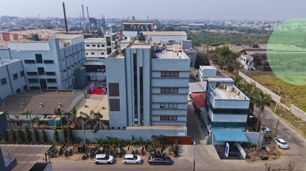
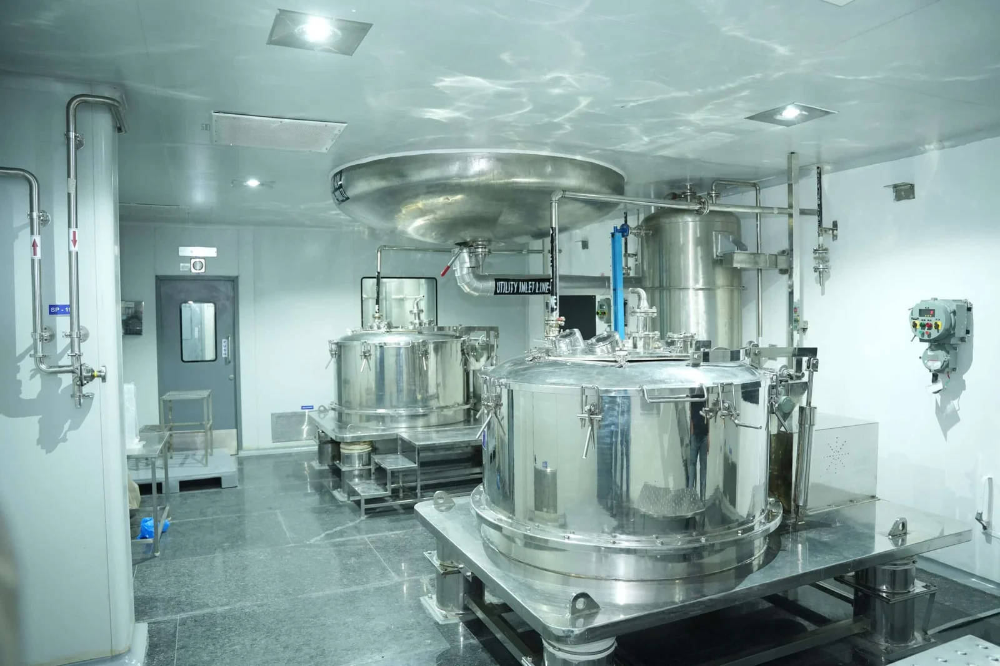

Satyam Chemical is a globally recognized pharmaceutical API manufacturer based in Zagadiya, India. With cGMP-compliant facilities and advanced infrastructure, we manufacture high-quality Active Pharmaceutical Ingredients for regulated global markets.
Our integrated operations, experienced leadership, strong quality systems, and commitment to regulatory excellence position us as a reliable long-term partner for pharmaceutical companies worldwide.
Satyam Chemicals operates cGMP compliant facilities in Ankleshwar delivering high quality Active Pharmaceutical Ingredients to regulated markets worldwide.

At Satyam Chemical, we deliver integrated API manufacturing capabilities aligned with global regulatory standards, ensuring quality, scalability, and reliability.